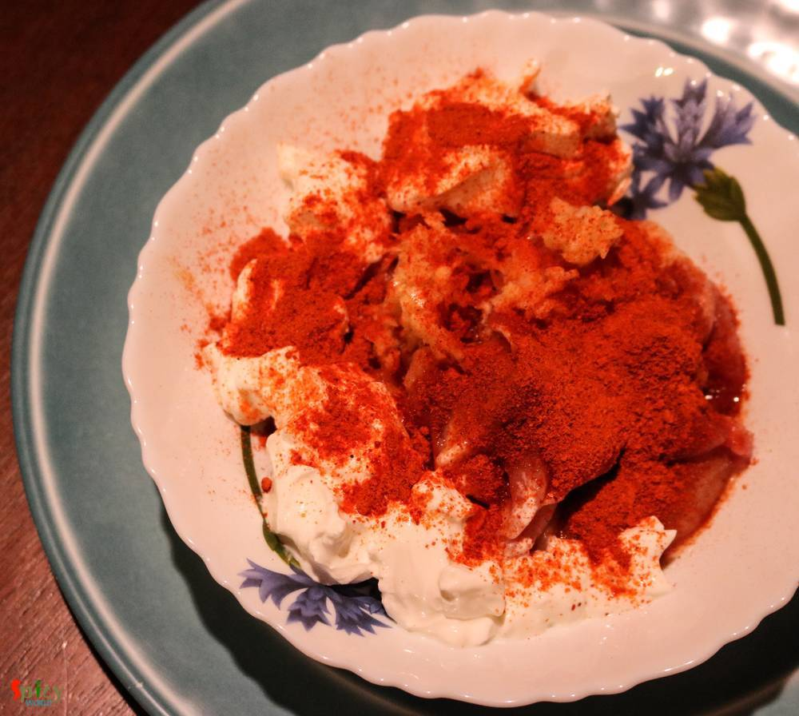
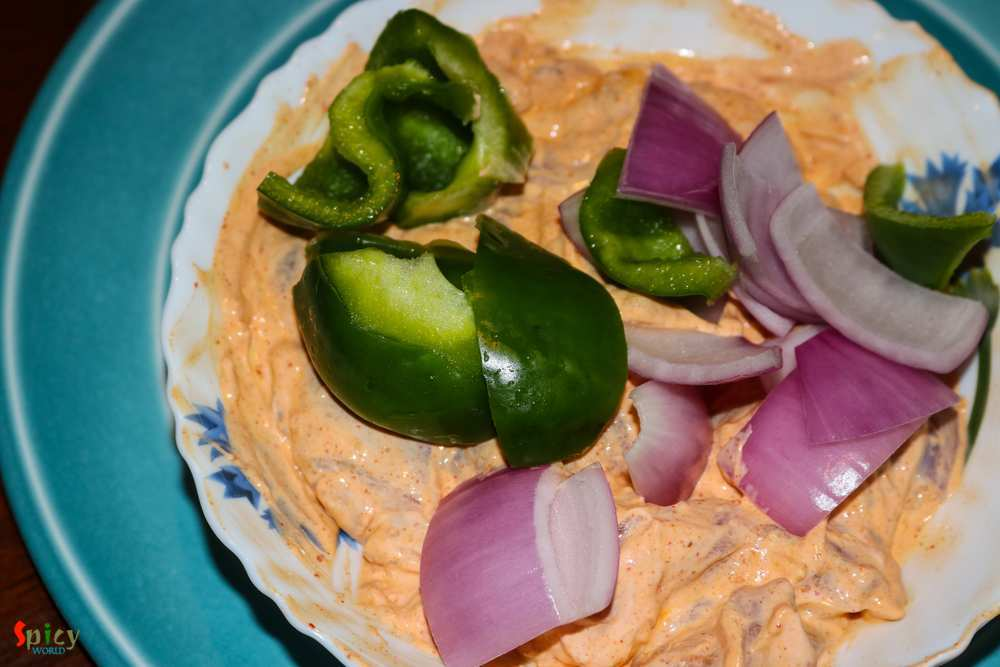
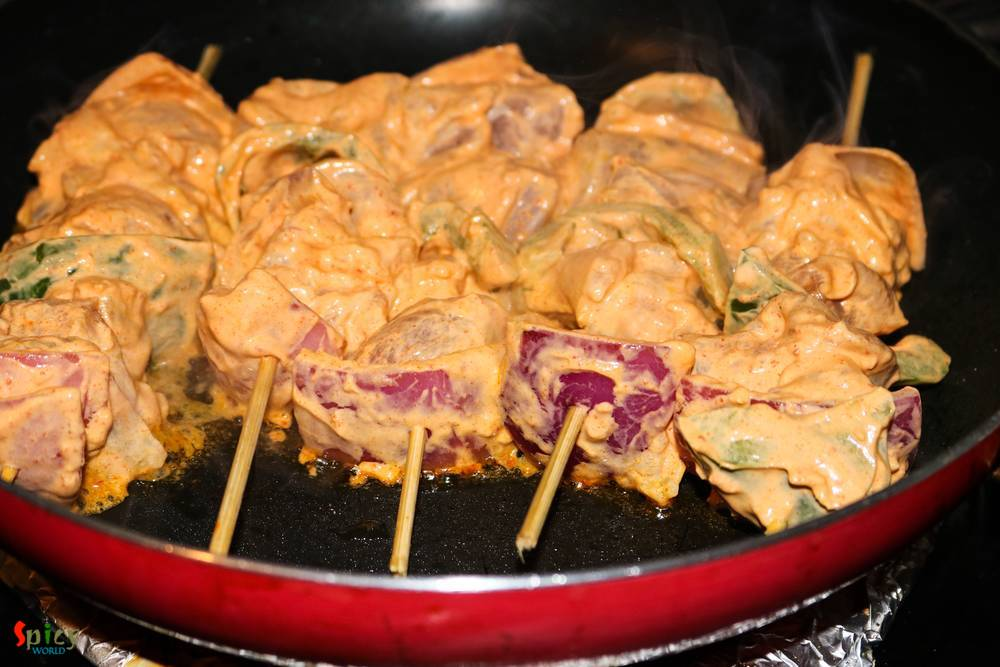
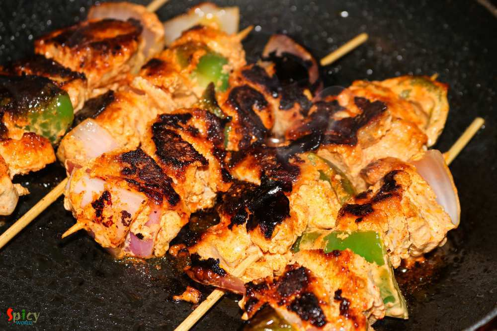
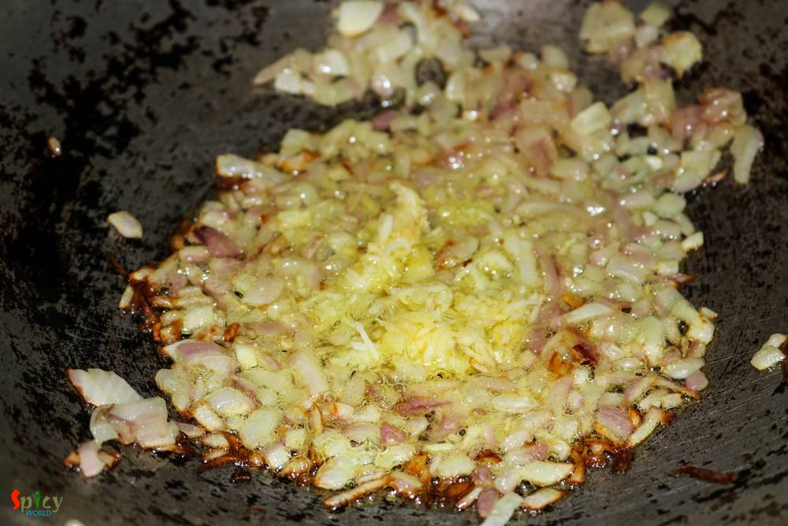
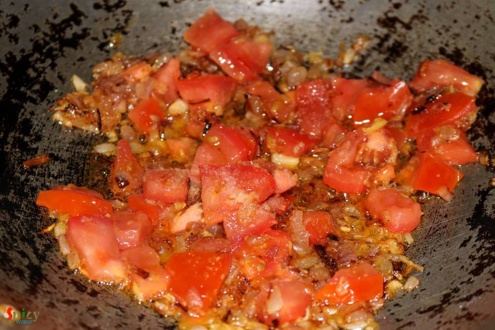
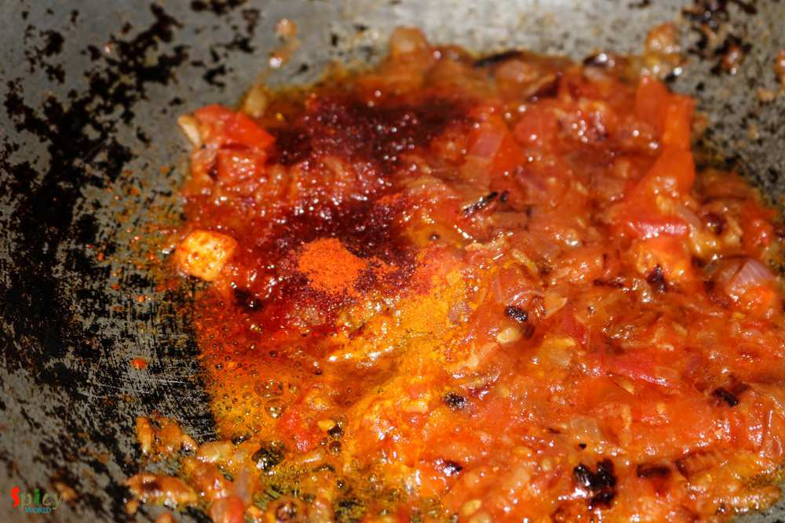
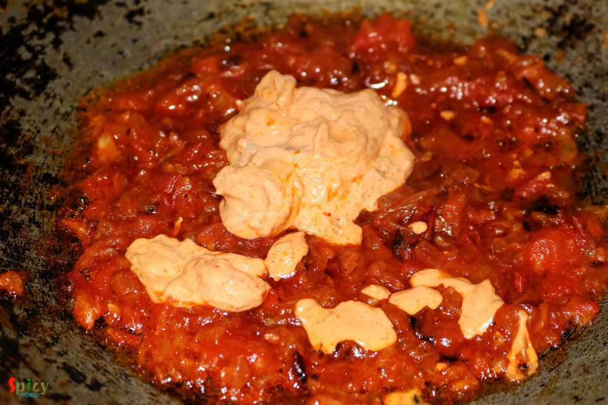
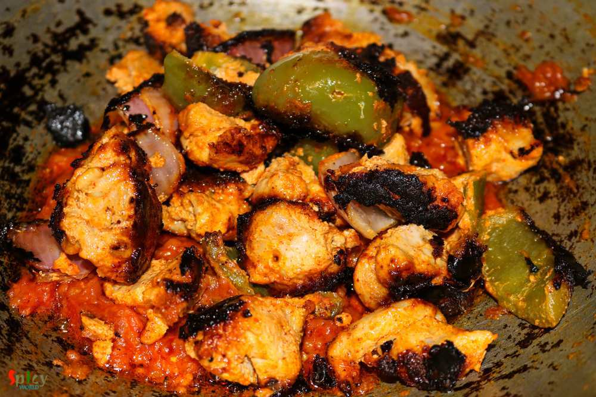

Simple and Easy Recipes
Chicken Tikka Masala
© 2016 Spicy World, Published on: Jul 12, 2016
In USA, every Indian resturant serves 'chicken tikka masala' and it tastes delicious. I never had it in India, don't know why ? Tikka sized grilled chicken, onion and bell peppers are cooked in a tomato based creamy gravy. After tasting this dish several times in restaurants, last month I thought of making it at home. Few months ago I uploaded the recipe of 'chicken tikka kabab', so I am going to use that tikka spice powder in this dish. If you don't have the recipe, click the name and check it out. Try this easy and simple recipe in your kitchen and enjoy it with some butter naan and salads ...

Ingredients
- 10-15 boneless bite size chicken pieces.
- Half cup of cubed onion.
- Half cup of cubed bell peppers.
- 3 - 4 Tablespoons of yogurt.
- 1 Tablespoons of ginger and garlic paste.
- 4 Tablespoons of tikka masala / spice powder.
- 2 Teaspoons of Kashmiri red chilli powder.
- 2 Teaspoons of hot red chilli powder.
- 1 Teaspoon of turmeric powder.
- 1 small onion, finely chopped.
- 1 medium sized tomato, chopped.
- Salt and sugar.
- Oil.
- 1 Teaspoon of butter.
- 2 Tablespoons of cream.
- Water.
- Skewers

Steps
Marinate the chicken pieces with yogurt, salt, half Tablespoon of ginger, garlic paste, 1 Teaspoon of hot red chilli powder, 2 Tablespoons of tikka masala, 1 Teaspoon of Kashmiri red chilli powder.
Then add cubed onion, bell peppers and a Teaspoon of oil. Mix well and keep this in fridge for 2 hours.
After that shake off the excess marinade and arrange the chicken, onion and bell peppers in skewers evenly.
Heat 2 Teaspoons of oil in a flat pan and place those skewers in hot pan. Keep the excess marinade aside.
Cook each side for 3 minutes on high flame. Then remove them from the pan.
Heat 2 Tablespoons of oil and 1 Teaspoon of butter in that pan.
Add the finely chopped onion in hot oil with pinch of salt. Cook till they become golden in color.
Add the remaining ginger and garlic paste. Cook for 3 minutes.
Then add chopped tomatoes, salt and a Teaspoon of sugar. Cook for 6 minutes.
When the oil starts to ooze out, add the remaining tikka masala powder, hot red chilli powder, kashmiri red chilli powder and 1 Teaspoon of turmeric powder. Mix well for 2 minutes.
Then add the excess yogurt marinade. Cook for 7 minutes.
Add the grilled chicken, onion and bell peppers into the gravy. Mix well.
Add some warm water and cook for 15 minutes in medium flame.
Lastly add the cream, mix gently and turn off the heat.
Your chicken tikka masala is ready ....
Serve this hot with naan, pulao or biriyani ...
")